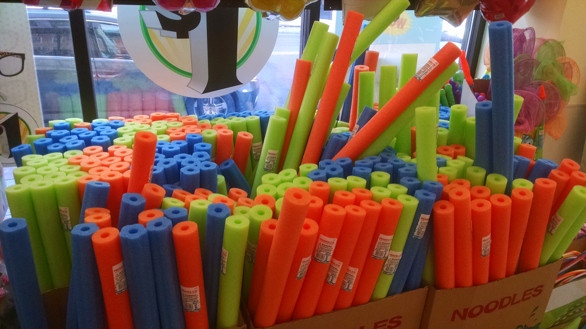
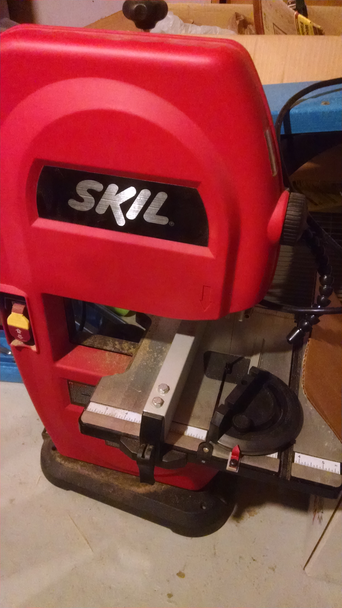

In October 2015, my friend Dan Gries and I got to decorate the windows of the New Haven Armory on Goffe Street, for City Wide Open Studios. They were covered in metal grids, and, like we had with the Marilyn Monroe piece we did for Re:Generate 2014, we stuffed the grid with chunks of pool noodles.
Planning
Since the grid was diagonal, and stretched, we had to find a new way to cut the noodles to fit into the grid. After a few bad ideas…

…we settled on alternating diagonal placement.

We had sixteen grids that were about 30” wide, 72” tall. That meant buying a lot of pool noodles.
Stocking Up
A lot of pool noodles. We went to Dollar Stores in something like seven cities to find enough - since it was September, a lot of the stores were out, but we eventually found enough.

We bought over 250 pool noodles, and ultimately placed 25,352 pieces into the grid. To turn each pool noodle into about 100 pieces would be a lot of cutting.
Cutting
My buddies Scott and Anna suggested I borrow their bandsaw.

This beauty was my savior. While Dan did a lot of the image and software work, I focused on cutting up the noodles.
First, cut them in half lengthwise:

Then each half into quarters:

Then each quarter into chunks:

Prepping Images
At the same time, we were looking for images to use. CWOS’ theme for 2015 was “Dwelling,” so we eventually settled on animals that you often find around the home. It was clear that the images had to be recognizable - we thought a lot about doing abstracts, but it always seemed too boring for this medium. Once we had a range of images, Dan ran them through a dithering algorithm, and made preview PDFs. We had to keep track of how many orange, blue, and green were used in each image, so we didn’t run out of any color. To pick the final set, we printed them all, and laid them out.

With about 1,300 pieces per grid, you need a map.


Installation
We needed three car-loads to drive the ladders, table, and bags of noodle chunks to the Armory.


Some of the volunteers improvised with the noodle chunks, and used them to hold the map in place.

Look at Dan G, noodling like a boss: bag of noodles in one hand, marker in the other.

The Results
Here they are, from left to right, which is about the reverse of the order they were completed in:


After the Show
Dan’s flickr album has a bunch of great photos of the preparation, installation, and results.

You can (as of this post, anyway) see it up on Google Street view.